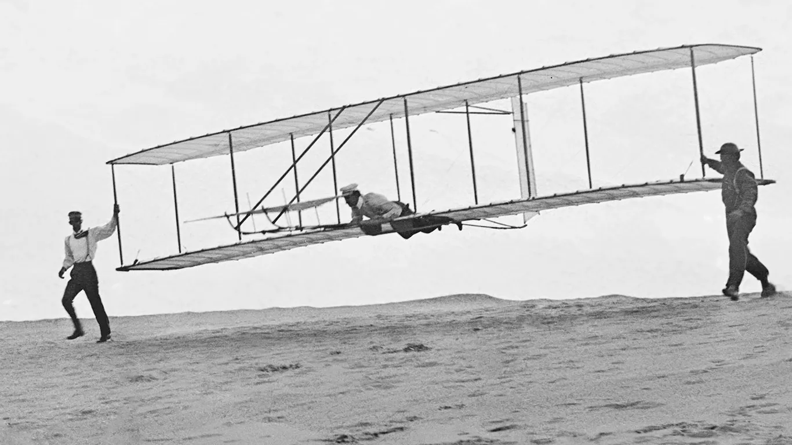

Hello there our good readers, we hope that you have been well and keeping safe.
Last week we learnt about entrepreneurship and how to value the money that we have through identifying our different wants and needs. Once we prioritize our needs then we can be able to save up more money to use as capital for our businesses.
Since we would like to start businesses at a young age our first task has been to identify what we would like to do. The best way to know what you need to do is by identifying the different needs in the society today. Whenever you are able to fix a problem in society you are well on your road to starting a business. We can always tie down our desire to solve a need in society by using our different talents, abilities and skills.
Some of the societal needs can be solved through our wildest imagination and therefore it is important to remember that we can always dream way above and beyond. The wise men said that if your dream does not scare you then you are not dreaming big enough. Therefore we challenge you to dream big and let the sky be limit. The Wright brothers invented an airplane in a time where nobody thought that there was a possibility to have air transport.
Once you have identified the need and the gap that you are going to fill in society then we need to find a name to call the business. A good business name should embody the feeling of your business and be memorable. They are many ways you can come up with a business name such as using name acronyms, like NTV, or the combination of two names for example Ben & Jerry Ice-cream company. Share with us some of the business names you have for your company.
Now we go to the branding of your business. Like we have noticed most businesses have specific colors that uniquely identify to them. At Amazing kids our branding colors are purple, yellow, blue and white. It is essential for a business to develop a strong brand identity that will help them stand out.

Secondly after establishing your brand colors then we identify our target market and audience. Who will be the biggest consumers of your product? Will it be the young people, elderly people, male or female? Once you have gotten your target market then you can start creating a brand identity. This includes developing a logo, font selections, slogan and other visuals that will help create a recognizable presence in the market place. In addition you should also create a consistent look and feel across all your marketing materials, including websites, social media and print materials.
By following these steps then we shall be on our way to creating successful brand identity that will ensure your brand is memorable and recognizable in the market place.
Tell us what are some of the other steps you have used to start and grow your business as well as establish a strong brand identity in the market today.